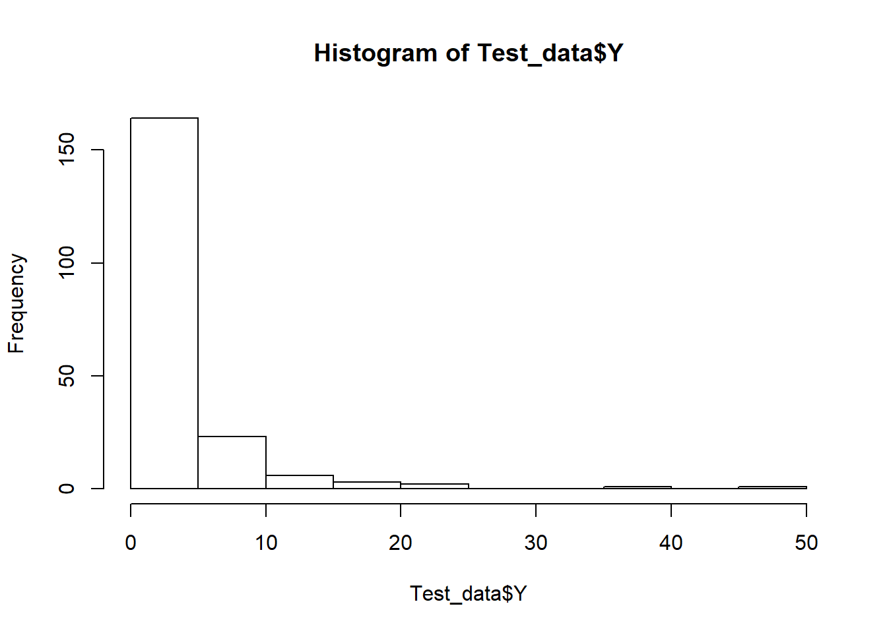
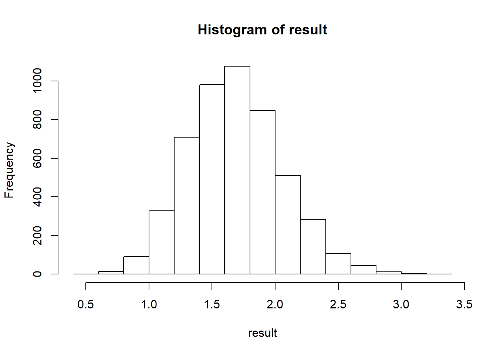
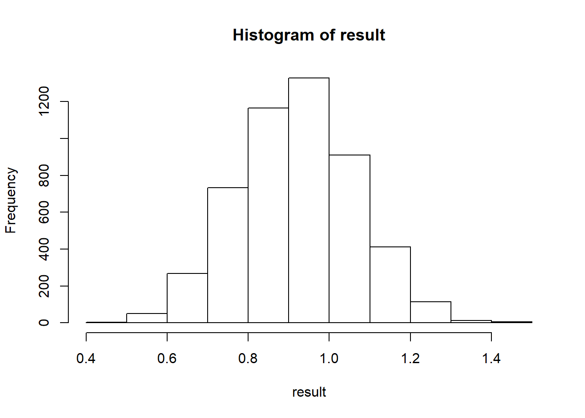
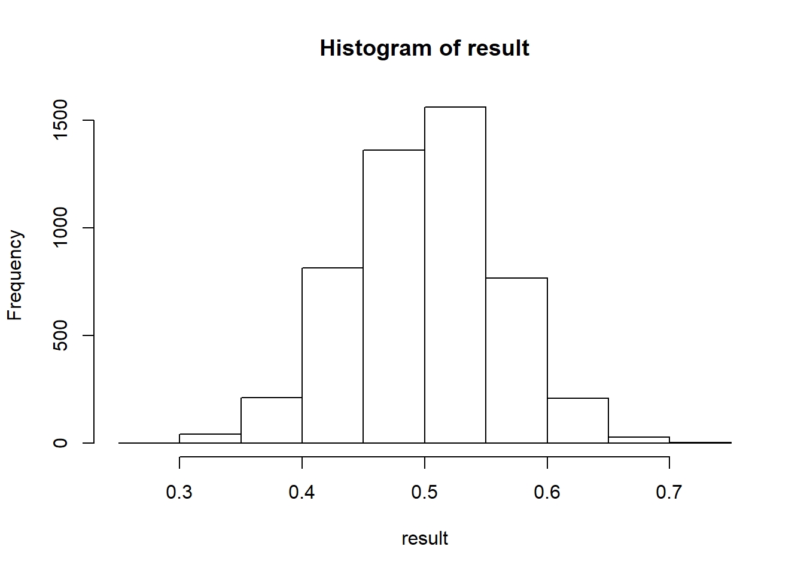
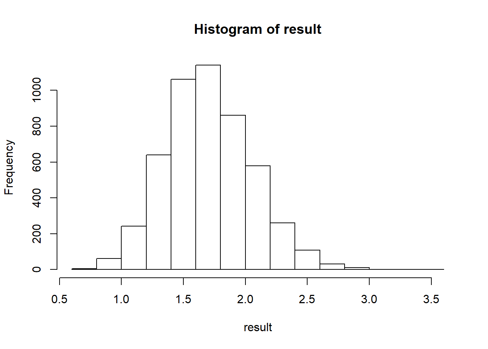

Chapter 7 Use R for mediation
References:
https://bookdown.org/roback/bookdown-BeyondMLR/ch-poissonreg.html
https://advstats.psychstat.org/book/mediation/index.php
7.1 Normal Distribution Case
The following code generates the data to be used in the mediation model. Based on the histogram, we can see that it follows Poisson distribution.
# Generate data for mediation analysis
# https://ademos.people.uic.edu/Chapter14.html
# Generate Possion data
# https://stats.stackexchange.com/questions/27443/generate-data-samples-from-poisson-regression
set.seed(123)
N <- 200
X <- rnorm(N, 1, 1)
M <- 0.6*X + rnorm(N, 0, 1)
mu <- exp(0.2*X+0.8*M )
Y <- rpois(n=N, lambda=mu)
Test_data <- data.frame(X, M, Y)
head(Test_data)## X M Y
## 1 0.4395244 2.4625250 7
## 2 0.7698225 1.7743065 4
## 3 2.5587083 1.2700799 2
## 4 1.0705084 1.1854991 1
## 5 1.1292877 0.2632327 1
## 6 2.7150650 1.1527921 9
Next, while in reality it follows Poisson distribution, the following assumes normal distribution. You will find the results are consistent with PROCESS.
Normal_Mediation<-function(X, M, Y, data_used, resampling_size=5000)
{
result = rep(NA, resampling_size)
n_row = nrow(data_used)
for (i in 1:resampling_size)
{
boot.sample = sample(n_row, replace = TRUE)
data_temp<-data_used[boot.sample,]
# a path
result_a_temp<-lm(M~X, data = data_temp)$coefficients
names(result_a_temp) <- NULL
a_0_temp<-result_a_temp[1]
a_1_temp<-result_a_temp[2]
# b path
result_b_temp<-lm(Y~M+X, data = data_temp)$coefficients
names(result_b_temp) <- NULL
b_0_temp<-result_b_temp[1]
b_1_temp<-result_b_temp[2]
c_1_apostrophe_temp<-result_b_temp[3]
#calculating the indirect effect
indirect_temp<-a_1_temp*b_1_temp
result[i]=indirect_temp
}
hist(result)
sd(result)
print(mean(result) + c(-1, 1) * 2 * sd(result))
print(quantile(result,c(0.025,0.975)))
}
Normal_Mediation(X=X, M=M,Y=Y, data_used = Test_data,resampling_size=5000)
## [1] 0.9502475 2.4221161
## 2.5% 97.5%
## 1.021319 2.4537627.2 Poisson Distribution Case
However, the problem is that the DV is count data. So, it is better to take that into consideration. The following is based on the paper of Geldhof 2017, Accommodating binary and count variables in mediation, A case for conditional indirect effects.
In particular,
Poisson regression uses the log link. For the b path function, it is as follows.
\[log(Y)=e^{b_0+b_1M+c^{'}X}\]
Thus, its first partial derivative again M is as follows.
\[b_1e^{b_0+b_1M+c^{'}X}\] Where,
\[M=a_0+a_1X\]
Thus, the indirect effect is as follows.
\[IndirectEffect = a_1b_1e^{b_0+b_1M+c^{'}X}=a_1b_1e^{b_0+b_1(a_0+a_1X)+c^{'}X}\]
As we can see the indirect effect is not a constant, as it depends on X. Different X values will lead to different indirect effects. Thus, you can see the following R code takes this into consideration.
# x_predetermined = 0 : X = Mean
# x_predetermined = 1 : X = Mean + SD
# x_predetermined = -1 : X = Mean - SD
Poisson_Mediation<-function(X, M, Y, data_used, x_predetermined=0, resampling_size=5000)
{
result = rep(NA, resampling_size)
n_row = nrow(data_used)
if(x_predetermined==0){x_predetermined=mean(data_used$X)}
else if (x_predetermined==-1){x_predetermined=mean(data_used$X)-sd(data_used$X)}
else(x_predetermined=mean(data_used$X)+sd(data_used$X))
for (i in 1:resampling_size)
{
boot.sample = sample(n_row, replace = TRUE)
data_temp<-data_used[boot.sample,]
# a path
result_a_temp<-lm(M~X, data = data_temp)$coefficients
names(result_a_temp) <- NULL
a_0_temp<-result_a_temp[1]
a_1_temp<-result_a_temp[2]
# b path
result_b_temp<-glm(Y~M+X, data = data_temp, family = quasipoisson)$coefficients
names(result_b_temp) <- NULL
b_0_temp<-result_b_temp[1]
b_1_temp<-result_b_temp[2]
c_1_apostrophe_temp<-result_b_temp[3]
#calculating the indirect effect
M_estimated_temp=a_0_temp+a_1_temp*x_predetermined
indirect_temp<-a_1_temp*b_1_temp*exp(b_0_temp+b_1_temp*M_estimated_temp+c_1_apostrophe_temp*x_predetermined)
result[i]=indirect_temp
}
hist(result)
quantile(result,c(0.025,0.975))
}
# X = Mean
Poisson_Mediation(X=X, M=M,Y=Y, data_used = Test_data,x_predetermined=0,resampling_size=5000)
## 2.5% 97.5%
## 0.6432712 1.2018952# X = Mean - 1 SD
Poisson_Mediation(X=X, M=M,Y=Y, data_used = Test_data,x_predetermined=-1,resampling_size=5000)
## 2.5% 97.5%
## 0.3773349 0.6186202# X = Mean + 1 SD
Poisson_Mediation(X=X, M=M,Y=Y, data_used = Test_data,x_predetermined=1,resampling_size=5000)
## 2.5% 97.5%
## 1.073396 2.435226